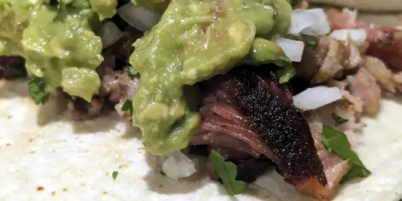

Tacos De Costilla De Puerco Ahumada
En este episodio de "will it taco" es algo que.. naamaaaaaa.... claro que it will taco! Es puerco!, no se me ocurre algún platillo de carne de puerco que no pueda comerse en taco... desde... ps no se... orejas fritas hasta carnitas estilo Michoacán, pasando por menudo y pozole y sabes qué? hasta me haría un taco de hong shau rou sin dudarlo! ok pues, ese último alomejor lo aderezaría con un poco de hoisin además de una salsa picante, pero igual... de que it will taco, it will taco!
{kind=link}
Y bueno, estos? estos tacos son con costilla ahumada al estilo texano, con sal, pimienta y bastante paprika, misma fórmula que las demás veces que ahumamos: humo a 275F hasta que llegue a 160F, luego empapelado hasta que llegue a 195~200F. En este caso, las deshuesamos y ponemos a que se doren un poco, pero luego luego, a la tortilla de maíz, cebolla, cilantro, limón, sal y una salsa picante p'a que acomplete el sabor.
Will it taco? feeeecnhell nunca hubo duda!

{kind=link}
{kind=link}
PD... estas costillas las "tuvimos que" ahumar porque se nos antojó un pozole para año nuevo, así que estas son el "retazo" del pozole... jeje